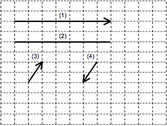

5. A boy is walking his dog around his neighbourhood. He leaves from his house
and takes the following path: two blocks north, one block west, one block
south, one block north and then two blocks east.
Distance Travelled and Displacement

Legend: 1 square = 1 block
Which of the figures above could represent the boy’s distance travelled and
displacement?
|
|
Distance Travelled |
Displacement |
|
A) |
1 |
3 |
|
B) |
1 |
4 |
|
C) |
2 |
3 |
|
D) |
2 |
4 |